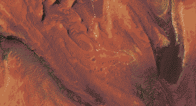
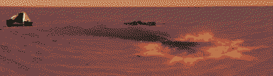

Rover
A curio-collector robot, inhabited by the spirit of a timelost stardog. It likes to collect and vacuum-seal fossils and opals. It follows the same old trails, on a round-trip of a couple decades. Bit of a chicken-egg paradox; there’s always been a dog in the machine, but it’s also following ancient guidance paths from Earth, but those paths are intuitive to a dog…
 
Big short-film-storyboard-dream!
Imagined this as a scrappy 3D short film made with stolen photogrammetry assets.
| Mars from low orbit, and Phobos is approaching the camera fast. Maybe a lil satellite is visible to get an idea of the time period. A fireball streaks across the sky towards the planet, and Phobos closes in on the camera. As it turns towards to the light of the sun, a strange tree-like object is visible on its surface. |
|---|
| Salt pan: daytime A vista of red sand dunes around a salt pan, with one sharp dune centred in the shot and plume of dust coming from behind it. The camera pans upwards as a Rover crests the dune, then turns itsupper body towards the direction it came from. |
As it rotates, closeup on the rover’s guidance screen, showing its intended path ahead.
| Then its camera arm taking an image of the landing zone behind it, Phobos centres in the shot as it take the photo |
|---|
| Salt pan: night time Far in the future; parallel of the picture the rover just took, with flipped colour scheme - stark greys and whites with small patches of red on the dune where footsteps have broken the snow. Reverse delay/reverb atmospheric sounds fade in. Phobos is shattered in the sky. |
Rain: A figure wrapped in shawls and a wooly jacket is crouched next to the wreckage. No part of their body is visible but for their eyes and the bridge of their nose. Headphones around their neck are spitting static.
Zoom in closer as their face is illuminated from underneath by the orange glow of a small device. They stand up, disconnecting wires linking the wreckage to their device.
| Closeup on the device’s interface as they yank the wires out from the bottom. The light dulls and starts periodically blinking. |
|---|
| Cut to a parallel of the shot with the dune from earlier - Rain crests its peak, the device hanging on their belt, blinking dull orange. |
| Slow zoom on their face as a gust of wind blows away their scarf - a faint orange blinking lights their cheeks and Deimos’ moonlight reflects in their eyes while it’s brother’s remains creep from the horizon behind Rain’s head. They put their headphones on, then play with a knob on the device and music fades in like they’ve found a radio signal. |
Cut to closeup of the Rover’s face, the sunlight bouncing off its singular ‘eye’, both Phobos and Deimos in the sky together behind its head. Its navigator pointing it in the same direction.
| Time-lapse sort of montage of Rain and the Rover following the same journey . Centuries of erosion have covered the Rover’s tracks, but Rain follows it regardless, because of the signal from the wreckage. |
|---|
| Rain comes across a small rowboat on the crest of a dune, pushes it and jumps in it and glides down. The boat stops next to some derelict coastal military flotsam, and they stand up and pass these by as if they’re not unusual. Further on, shipwrecks can be seen on the horizon, weathered and salt-encrusted. |
| Rain’s boot catches on something in the salt and they pause for a moment to crouch down. A faint clicking sound starts coming from their device. They pick up and inspect some stone curio. As they pick up the fossil the clicking increases slightly in tempo and volume. |
| Rain stands back up, plays with some knob on their device and continues walking faster. |
The Rover pauses to take a photo of Phobos eclipsing the sun. Through the viewfinder and the reflections in the rover’s eye-lens we see the thin ring of light around Phobos start to be iridescent like an opal. The music starts to build to a climax.
| Montage of Rain unearthing more curios in the salt, the clicking sound increasing further, the soundtrack becoming more dissonant and chaotic. A series of shots focuses on Rain’s hands as they pick each artefact up, sand running out of its crevices and through their fingers. The last fossils are recognisable as human parts, but with the texture of petrified wood. |
|---|
| Music breaks up into static, but not entirely. Overhead shot of the boat at the beginning of the salt lake; a hyena skulks in from the bottom of frame, nose to the ground, pan to follow Rain’s red footprints where they’ve broken through the white salt. |
Close-up side-on of the hyena’s nose stopping at one of the footprints. Its head shoots up and it looks straight ahead (right), before turning around with its head bowed and skulking back. Pan left until the hyena comes into the shadow of a figure - Eris, squatted down, above the shoulders out of the shot. One huge hand fingering the red sand/clay to try and gauge how fresh the prints are. She pauses for a second to feel the clay between thumb and index finger; the mutt whimpers and the hand reaches out to pet it roughly, streaking red clay across its ear.
| Wider, less orthogonal shot (like 3/4 or 7/8ths perspective) as Eris stands up and the hyena bows its head submissively again. She wears much less warm covering than Rain, and a stone root network is spreading from her spine, across her shoulders, down her arms. A shawl covers her face and neck. Her hands are fists at her sides, her legs square with her shoulders, standing slightly hunched - like all her rage is held in her shoulders. She stares ahead for a beat, her hair and clothes are picked up by the wind. |
|---|
| She reaches for her radio attached to a thigh holster, flicks a switch and the static cuts out. |
A moment of stillness, just the wind; she breathes in deep through her nose, then utters a commanding word.
| The hyena starts to howl (hoot?) at the ground and chatter comes from behind Eris, as the rest of the pack runs down the dune, cackling and kicking up dust. Pan in on Eris to see clearer the mix of apathy and rage in her heavy eyes, and a peak at the stone texture of her skin beneath her shawl. |
|---|
| Cut to the Rover’s viewfinder, taking a few blurry photos of the silent eruption of Phobos’ iridescent ring into many seeds. A devastating beautiful little string melody. |
Wide shot of the Rover looking up to the sky as these seeds rain down around it, leaving streaking colourful trails behind them.
| Overhead spotlight shot on the rover. The music becomes incredibly distorted with static, as the spotlight grows incredibly bright, blowing it out. |
|---|
| Cut to a much wider as we see one of these seeds land on top of the Rover. Linger for a few seconds, audio has completely cut out as colours dissipate around the bright impact. |
Cut to Rain standing in front of a stone tree similar to the one on Phobos at beginning, with strange geometry imprinted in the ground around it. The shot is framed same as the previous, with the tree in the same place as the impact.
The flashing of the device’s orange light has increased in frequency to the point where it’s constantly glowing bright orange, and the clicks are so fast at this point and sound eerily similar to a Geiger counter, mixed with the headphones around Rain’s neck spitting out static again.
| Rain flips a switch and the interface turns from a topographical map into an audio-visualiser. They tune a knob to try and focus in on a signal. |
|---|
| As Rain searches, the word ‘carrion’ is being chanted very faintly, whispered by many voices in the static. As the chanting and the disturbing static grows, the camera pans from the device upwards to the branches of the monolith. Recognisable parts of the Rover stick out of the trunk, its camera arm sticks out amongst the branches. |
Cut back to the device in Rain’s hand, - as they turn the knob increasingly frantically, the noisy display occasionally stabilises into waveforms that look like teeth.
| Resume the pan down the length of the monolith, showing that the base of it looks like stone bodies tangled together. |
|---|
| The chanting, clicking and intense static noise climax as it focuses on the roots; stone limbs coiled around each other, knots that resemble faces, bodies growing out of the sand. |
Rain sighs as music finally cuts through the static again. They put their headphones on and it shifts from sounding diegetic to just being the soundtrack. The tension resolves for a moment as the music comes back. This moment reinforces how familiar Rain is with this strange world that the bodies don’t even phase them or they don’t notice.
| Rain looks up at the Rover’s arm amongst the branches, jumps up and snaps it off like a twig. |
|---|
| Closeup of Rain jumping to grab the Rover’s arm, reflected in its fish-eye. |
They plug its camera into their device via an everything-adaptor wire after breaking some stone-bark off of it to find an input.
| The vibrant colours of the Rover’s final moments light up in Rain’s eyes. |
|---|
| As they stand transfixed by the images on the device, Phobos’ shattered remains have risen well above the horizon behind their head, and just out of focus, the hyenas skulk down the dunes behind and around them: the land and sky resembling two halves of a great maw closing around them. |
The last signal picked up by the Rover’s arm before its antenna ossified beyond radio range. It was positioned just right to piece together these two halves of a T4T cowboy balled: > if we see this through > I’ll go west with you > we’ll cross the Argyle Sea > and climb the Tharsis Montes > we may hope that by tomorrow > the fighting might have stopped > in the meantime we’re just happy > sleeping in the dust